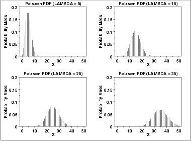
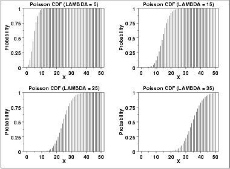
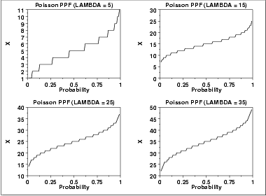

|
1.
Exploratory Data Analysis
1.3. EDA Techniques 1.3.6. Probability Distributions 1.3.6.6. Gallery of Distributions
|
|||||||||||||||
| Probability Mass Function |
The Poisson distribution is used to model the number of events
occurring within a given time interval.
The formula for the Poisson probability mass function is \( p(x;\lambda) = \frac{e^{-\lambda}\lambda^{x}} {x!} \mbox{ for } x = 0, 1, 2, \cdots \) λ is the shape parameter which indicates the average number of events in the given time interval. The following is the plot of the Poisson probability density function for four values of λ.  |
||||||||||||||
| Cumulative Distribution Function |
The formula for the Poisson cumulative probability function is
\( F(x;\lambda) = \sum_{i=0}^{x}{\frac{e^{-\lambda}\lambda^{i}} {i!}} \) The following is the plot of the Poisson cumulative distribution function with the same values of λ as the pdf plots above.  |
||||||||||||||
| Percent Point Function |
The Poisson percent point function does not exist in simple
closed form. It is computed numerically. Note that because
this is a discrete distribution that is only defined for integer
values of x, the percent point function is not smooth in the
way the percent point function typically is for a continuous
distribution.
The following is the plot of the Poisson percent point function with the same values of λ as the pdf plots above.  |
||||||||||||||
| Common Statistics |
|
||||||||||||||
| Parameter Estimation |
The maximum likelihood estimator of λ is
\(\tilde{\lambda} = \bar{X}\) where \(\bar{X}\) is the sample mean. |
||||||||||||||
| Software | Most general purpose statistical software programs support at least some of the probability functions for the Poisson distribution. | ||||||||||||||